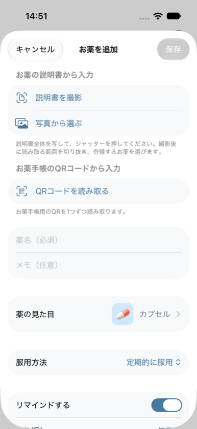
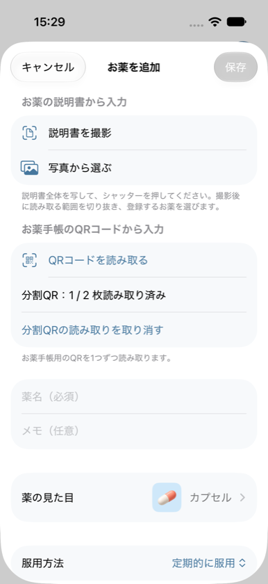
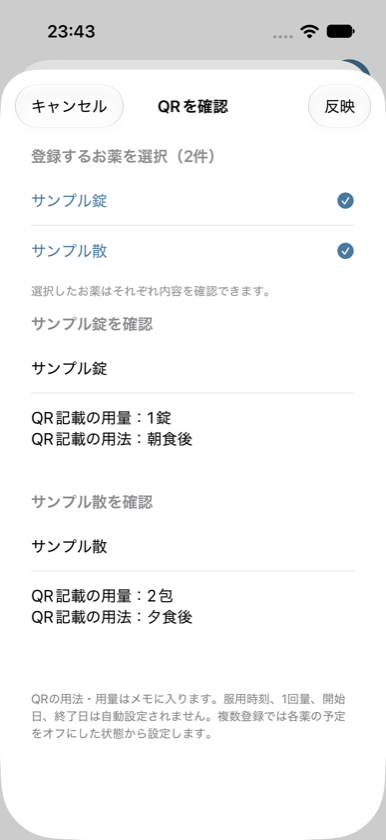
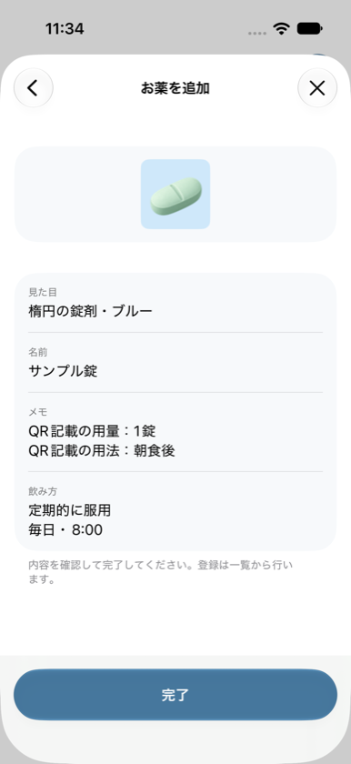

使い方ガイド・お薬の登録
お薬手帳のQRコードで
薬を登録する方法
電子お薬手帳用のQRコードを読み取り、登録するお薬を選んで内容を確認します。読み取っただけでは保存されません。
用意するもの
電子お薬手帳用QRコードを表示できるお薬手帳や書類。通常の商品バーコードには対応していません。読み取りにはiPhoneのカメラを使います。
STEP 1
お薬の追加からQRを開く
アプリの「お薬」から追加を開き、「お薬を追加」画面の「QRコードを読み取る」を選びます。カメラへのアクセスを求められたら許可してください。

STEP 2
QRを1つずつ読み取る
QRコードをカメラの枠内に1つずつ写します。分割されたQRの場合は、画面の読み取り済み数と残りの数を見ながら、すべて読み取ってください。
途中でキャンセルすると、読み取り途中の内容は破棄されます。入力済みの薬名やメモは残ります。

STEP 3
薬を選んで内容を確認する
候補から登録する薬を選び、薬名とQRに記載された用法などを確認して「反映」を選びます。1種類の場合は薬名やメモを確認・編集できます。複数の場合は次の登録一覧から薬ごとに設定します。

STEP 4
服用方法を設定して保存する
「名前・メモ」「服用方法」「薬の見た目」「確認・登録」の順に進みます。QRの用法から服用時刻や1回量は自動設定されないため、処方内容を見ながら入力してください。最後に内容を確かめて保存します。
複数の薬を選んだ場合は、各薬の確認画面で「完了」を選んで一覧に戻り、一覧の「○件を登録」でまとめて保存します。
